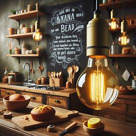

Hacks

- Use a damp paper towel under your cutting board to prevent it from slipping.
- Freeze leftover herbs in olive oil for easy flavoring in future dishes.
- Place a wooden spoon over a pot to prevent boiling water from spilling over.
- Keep your brown sugar soft by storing it with a couple of marshmallows.
- Use a muffin tin to serve condiments at a barbecue.
- Keep your knives sharp by storing them in a wooden block, rather than a drawer.
- Use a vegetable peeler to shave chocolate for garnishing desserts.
- Revive stale bread by sprinkling it with water and baking it in the oven.
- Wrap the crown of a bunch of bananas with plastic wrap to keep them fresh longer.
- Store ginger in the freezer to make it easier to grate.